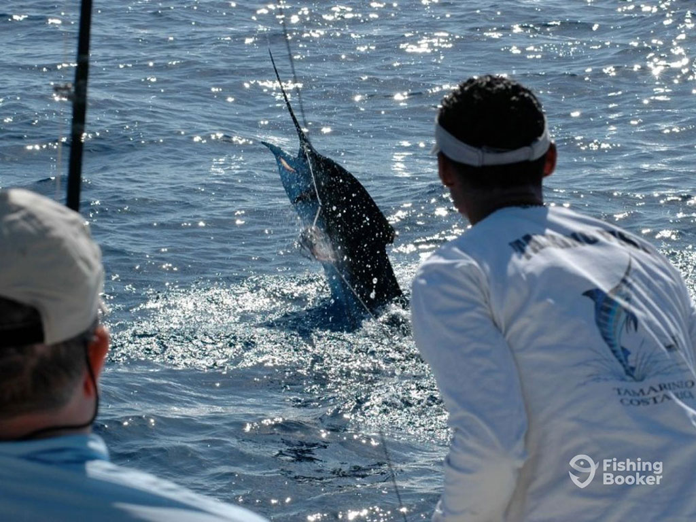

These are just some of the places but they are in a lot more
Catching a marlin is a major challenge in sportfishing due to the fish’s size, speed, and power. Anglers use large boats with heavy-duty rods, reels, and strong fishing line, often trolling live bait or artificial lures through warm offshore waters. Once hooked, marlin put up an intense fight, leaping and diving for long periods. Landing one can take hours and requires strength, skill, and teamwork between the angler, captain, and crew.
